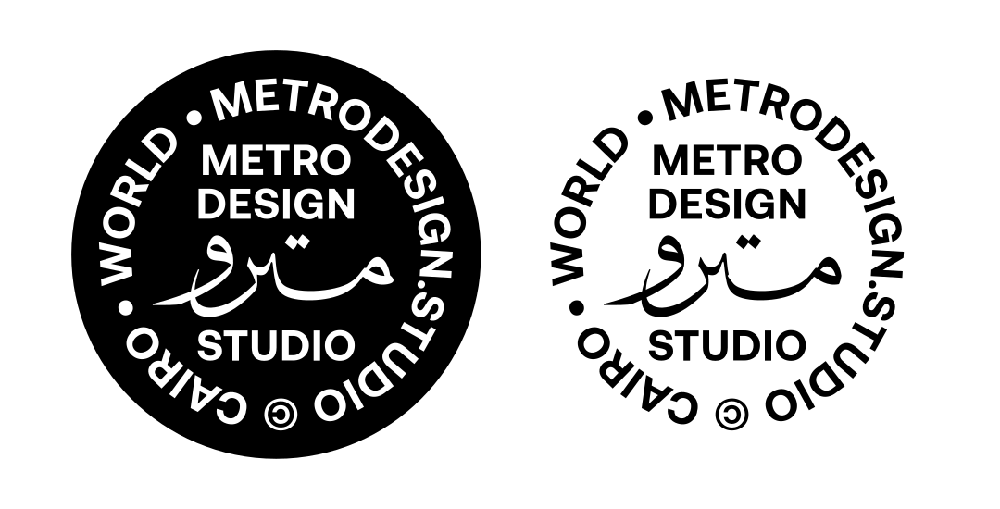

Discover
Understanding the
starting point.
We explore the brand, its audience, market, and cultural context to uncover key insights.

Rooted in culture.
Built for connection.
Metro is an independent creative branding studio based in Cairo, specializing in contemporary Arabic branding. We bring together cultural understanding, strategic thinking, and creative design to build distinctive brands that reflect their identity, resonate with their audiences, and belong to the world they live in.
Inspired by the city we come from, Metro takes its name from the movement, connections, and journeys that shape everyday life in Cairo.
We see every brand as a journey of discovery and transformation. Our role is to help ideas find their direction, develop their identity, and reach the people they are made for.
Culture is more than inspiration.
We believe great branding starts with understanding the people, culture, and context behind every brand.
Rather than simply following global trends, we create identities that draw from their own cultural roots, combining authentic character with contemporary creative expression.
1 Culture gives brands character. 2 Every brand deserves its own visual language. 3 Understanding comes before expression. 4 Authenticity and modernity belong together.
We envision a creative landscape where Arabic brands are recognized for their originality, cultural relevance, and contemporary expression.
Our ambition is to contribute to a more distinctive visual culture, creating brands that are confident in where they come from and relevant to where they are going.
We explore the brand, its audience, market, and cultural context to uncover key insights.
We turn insights into a clear strategy and creative direction.
We transform the chosen direction into a distinctive, cohesive brand identity.
We finalize the identity and prepare all assets and guidelines for implementation.
Metro brings together creative minds with a shared passion for branding, design, and Arabic visual culture.
Loading team…